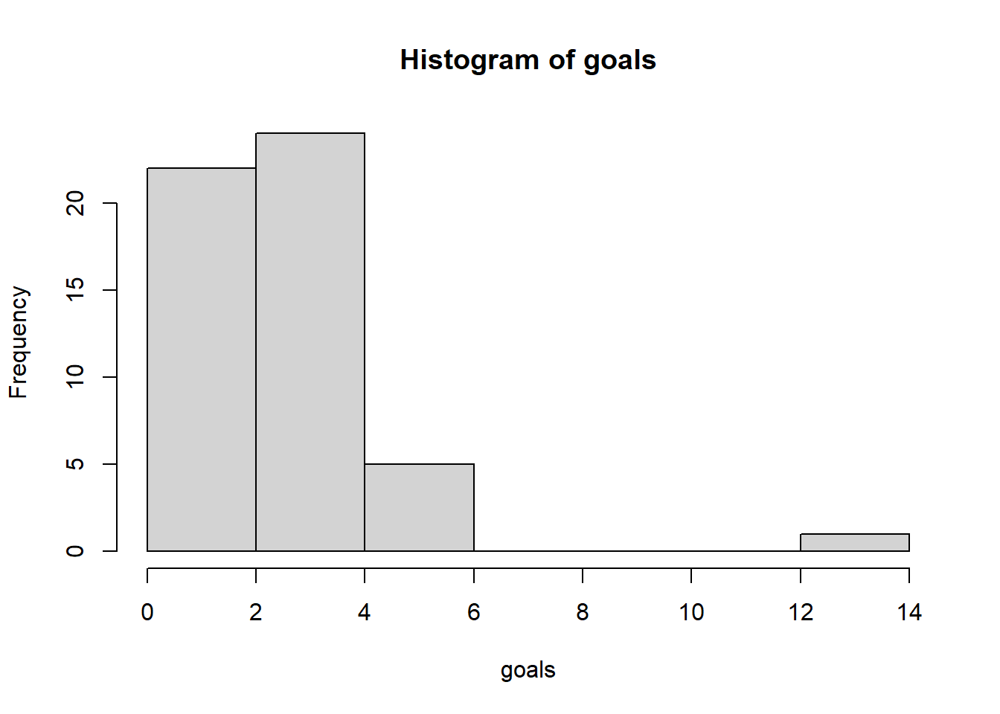
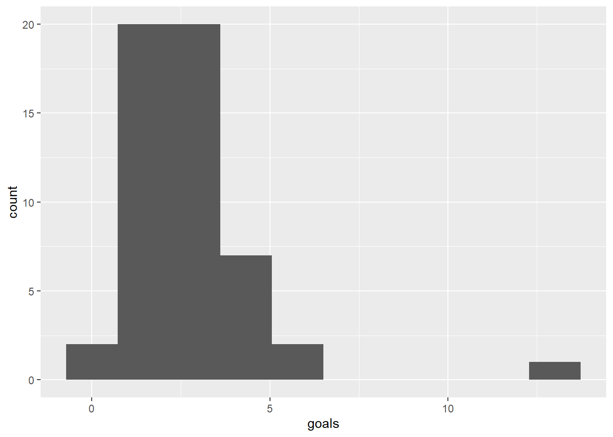
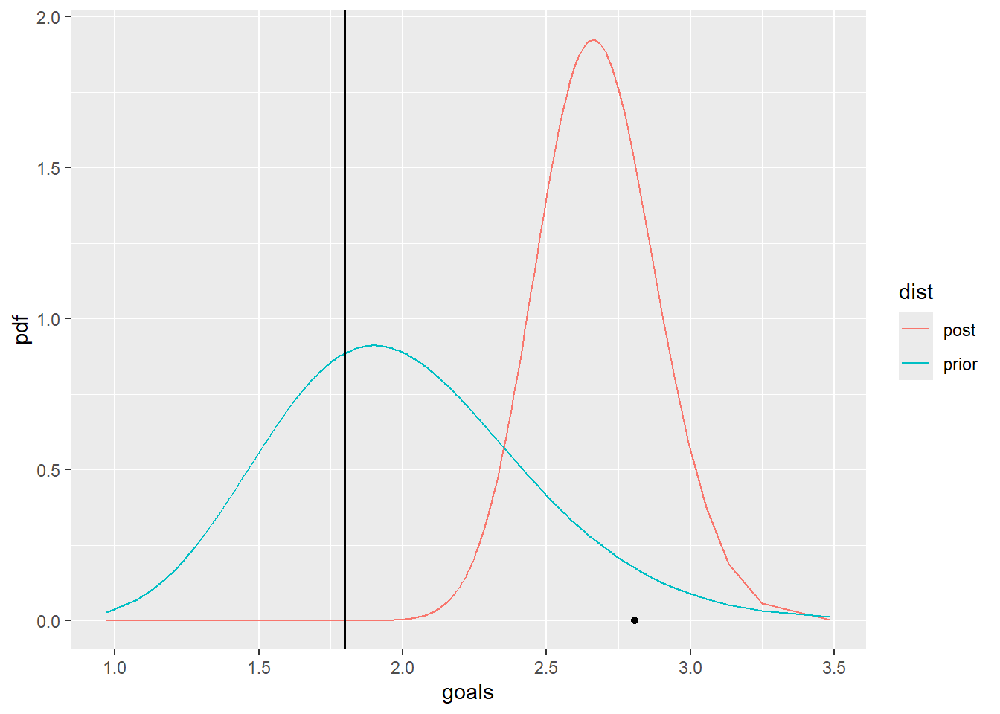
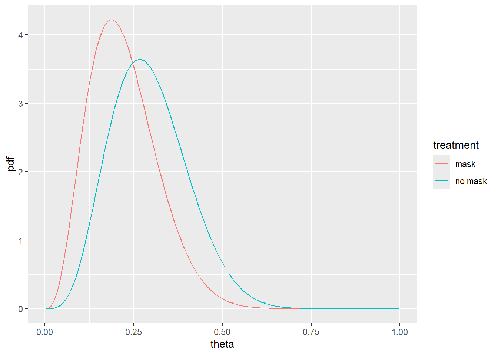

library(ggplot2)Conjugate models
A solution to exercise BADT
Task 1
Test an hypothesis using conjugate model. How sensitive is the conclusion from the choice of prior?
Let \(\lambda\) be the average number of goals scored in a Women’s World Cup game. We’ll analyse \(\lambda\) by a Gamma-Poisson model where data \(Y_i\) is the observed number of goals scored in a sample of World Cup games
Specify the model
Plot and summarize our prior understanding of \(\lambda\).
Why is the Poisson model a reasonable choice for our data
\(Y_i\)?
Use the wwc_2019_matches data from fivethirtyeight
The wwc_2019_matches data includes the number of goals scored by the two teams in each 2019 Women’s World Cup match. We summed the scores by the two teams per game, made a histogram and calculated some summary statistics:
Some larger datasets need to be installed separately, like senators and
house_district_forecast. To install these, we recommend you install the
fivethirtyeightdata package by running:
install.packages('fivethirtyeightdata', repos =
'https://fivethirtyeightdata.github.io/drat/', type = 'source')

Min. 1st Qu. Median Mean 3rd Qu. Max.
0.000 2.000 3.000 2.808 3.000 13.000 [1] 52- Make a test if the average number of goals scored in a Women’s World Cup game is less than 1.8.
# Summary statistics of data
m <- mean(goals)
n <- length(goals)
# Prior
## Flat
s_prior = 1 #shape
r_prior = 1/2 #rate
#expected value is shape/rate
s_prior/r_prior[1] 2#variance increase with shape and decrease with rate
s_prior/r_prior^2[1] 4## Strong
s_prior = 1*20
r_prior = 1/2*20
#expected value is shape/rate.
s_prior/r_prior [1] 2#variance increase with shape and decrease with rate
s_prior/r_prior^2[1] 0.2# Posterior
s_post = s_prior + m*n #shape
r_post = r_prior + n #ratepp <- ppoints(200)
#yy <- seq(0.01,10,by=0.01)
yy <- qgamma(pp,shape=s_prior,rate=r_prior)
df <- data.frame(goals=c(yy,yy),
pdf=c(dgamma(yy,shape=s_prior,rate=r_prior),dgamma(yy,shape=s_post,rate=r_post)),
dist=rep(c("prior","post"),each=200))
ggplot(df,aes(x=goals,y=pdf,col=dist)) +
geom_line() +
annotate(geom="point",x=m,y=0) +
geom_vline(xintercept=1.8)
# test if lambda is less than 1.8
# I calculate the probability that lambda is less than 1.8 using the posterior. If this value is not super small, I will consider it to
pgamma(1.8,shape=s_post,rate=r_post)[1] 9.125193e-07# 95% probability interval
c(qgamma(0.025,shape=s_post,rate=r_post),
qgamma(0.975,shape=s_post,rate=r_post))[1] 2.285608 3.099771Task 2
Use conjugate models to construct probability intervals for the results from a clinical trial and compare to a published meta-analysis.
31142-9/asset/b966c770-af7d-4424-a04a-556cef203d13/main.assets/gr4_lrg.jpg)
A relative risk (RR) is a ratio of the probability of an event occurring in the exposed group versus the probability of the event occurring in the non-exposed group.
Reproduce the probability interval for a RR from the forest plots tables e.g. Scales et al 2003
Calculate a probability interval for one of the studies for which the RR is not calculable, e.g. Hall et al 2014
# data Scales
y_mask = 3
N_mask = 16
y_nomask = 4
N_nomask = 15
if(FALSE){
# not calculable Hall
y_mask = 0
N_mask = 42
y_nomask = 0
N_nomask = 6
}# prior
a_prior = 1
b_prior = 1
# posterior
a_mask = a_prior + y_mask
b_mask = b_prior + N_mask - y_mask
a_nomask = a_prior + y_nomask
b_nomask = b_prior + N_nomask - y_nomaskpp = ppoints(200)
df <- data.frame(theta=pp,pdf=c(dbeta(pp,a_mask,b_mask),dbeta(pp,a_nomask,b_nomask)),treatment=rep(c("mask","no mask"),each=200))
ggplot(df,aes(x=theta,y=pdf,col=treatment))+
geom_line()
# sample to calculate posterior for the derived quantity RR
niter = 10^4
RR = rbeta(niter,a_mask,b_mask)/rbeta(niter,a_nomask,b_nomask)
# summarise the posterior for RR - a value less than 1 is in favour of wearing face masks
mean(RR) # posterior mean[1] 0.8869681quantile(RR,probs=c(0.025,0.975)) # posterior 95% probability interval 2.5% 97.5%
0.2034838 2.4478977